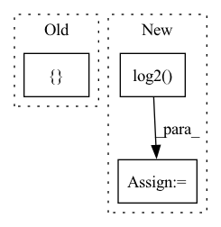

Pattern ID :22365
Before Change
class Generator(nn.Module):
def __init__(self, channels_noise, channels_img, features_g):
super(Generator, self).__init__()
self.net = nn.Sequential(OrderedDict([
// Input: N x channels_noise x 1 x 1
("block1", self._block(channels_noise, features_g * 16, 4, 1, 0)), // img: 4x4
("block2", self._block(features_g * 16, features_g * 8, 4, 2, 1)), // img: 8x8
("block3", self._block(features_g * 8, features_g * 4, 4, 2, 1)), // img: 16x16
("block4", self._block(features_g * 4, features_g * 2, 4, 2, 1)), // img: 32x32
("transpose_conv_out", nn.ConvTranspose2d(
features_g * 2, channels_img, kernel_size=4,
stride=2, padding=1, bias=False)),
// Output: N x channels_img x 64 x 64
("tanh", nn.Tanh())After Change
class Generator(nn.Module):
def __init__(self, channels_noise, channels_img, features_g, img_size=64):
super(Generator, self).__init__()
n_blocks = int(math.log2( 64/4) )
block_list = [
("block1", self._block(channels_noise, features_g * (2**n_blocks), 4, 1, 0)), // img: 4x4
]In pattern: SUPERPATTERN
Frequency: 3
Non-data size: 3
Instances Fragment ID: 70493395
Project Name: ebartrum/lightning_gan_zoo
Commit Name: 33cb57daa95823255bd830c1a9686d2515df75af
Time: 2021-04-22
Author: edward.bartrum@gmail.com
File Name: core/models/standard_networks.py
M Class Name: Generator
N Class Name: Generator
M Method Name: __init__(5)
N Method Name: __init__(4)
M Parent Class: nn.Module
N Parent Class: nn.Module
M File Name: core/models/standard_networks.py
N File Name: core/models/standard_networks.py
M Start Line: 58
M End Line: 69
N Start Line: 56
N End Line: 75
Before Change
loc_pred = torch.LongTensor(loc_pred)
val, index = torch.topk(loc_pred, topK, 1) // 使用 torch 的 topk 来实现
index = index.numpy()
res = []
for i, p in enumerate(index):
target = loc_true[i]
if target in p:
res.append(1)After Change
rank_list = list(p)
rank_index = rank_list.index(target)
rank += 1.0 / (rank_index + 1) // rank_index is start from 0, so need plus 1
dcg += 1.0 / np.log2( rank_index + 2)
return hit, rank, dcg
Fragment ID: 70493392
Project Name: libcity/bigscity-libcity
Commit Name: f0b03753c848287d705a8e55e44129099a99e9f7
Time: 2021-01-11
Author: 33283819+WenMellors@users.noreply.github.com
File Name: trafficdl/evaluator/eval_funcs.py
M Class Name: AnonimousClass
N Class Name: AnonimousClass
M Method Name: top_k(3)
N Method Name: top_k(3)
M Parent Class:
N Parent Class:
M File Name: trafficdl/evaluator/eval_funcs.py
N File Name: trafficdl/evaluator/eval_funcs.py
M Start Line: 65
M End Line: 72
N Start Line: 67
N End Line: 78
Before Change
super().__init__()
if stride == 4:
blocks = [
nn.Conv2d(in_channel, channel // 2, 4, stride=2, padding=1),
nn.ReLU(inplace=True),
nn.Conv2d(channel // 2, channel, 4, stride=2, padding=1),
nn.ReLU(inplace=True),
nn.Conv2d(channel, channel, 3, padding=1)After Change
super().__init__()
blocks = []
strides = int(math.log2( stride) )
if strides == 0:
blocks.append(nn.Conv2d(in_channel, channel // 2, 3, padding=1)) Fragment ID: 70493398
Project Name: tgisaturday/dalle-lightning
Commit Name: 817777e19a455605c54f26d77165c705193384e0
Time: 2021-08-17
Author: j@doodlebot.ai
File Name: pl_dalle/models/vqvae2.py
M Class Name: Encoder
N Class Name: Encoder
M Method Name: __init__(6)
N Method Name: __init__(6)
M Parent Class: nn.Module
N Parent Class: nn.Module
M File Name: pl_dalle/models/vqvae2.py
N File Name: pl_dalle/models/vqvae2.py
M Start Line: 236
M End Line: 250
N Start Line: 238
N End Line: 262